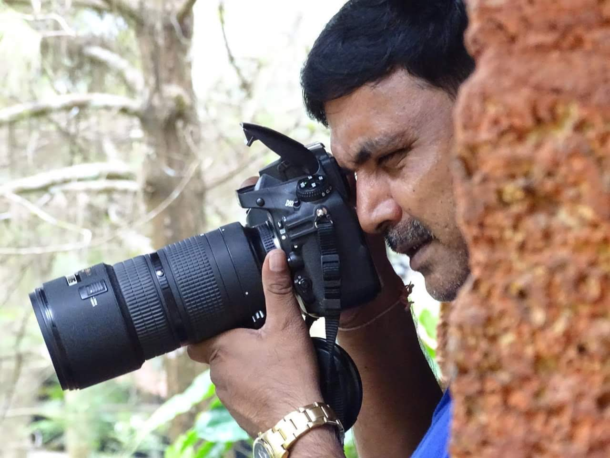

Balachandra Nadig has been a passionate photographer since 1998, capturing the world through his lens with an eye for detail and emotion. With a keen interest in travel, nature, and portrait photography, Nadig has taken part in numerous competitions, earning recognition for his compelling visual storytelling. His journey into photography began as an exploration of the world’s diverse landscapes and cultures. From the vibrant streets of bustling cities to the serene beauty of untouched wilderness, Nadig’s work reflects a deep connection to his subjects. His nature photography captures the raw magnificence of the natural world, while his portraits reveal the essence of human emotions and stories. Throughout his career, Nadig has traveled extensively, seeking inspiration in the unfamiliar and finding beauty in the everyday. Whether documenting the play of light on an ancient monument or the expressions of a passerby in a remote village, his images transcend the ordinary, offering viewers a glimpse into moments that might otherwise go unnoticed. Nadig’s dedication to his craft has earned him accolades in photography circles, with his work being featured in exhibitions and contests. His ability to blend artistic vision with technical mastery sets him apart, making him a respected name in the field. With over two decades of experience behind the camera, Balachandra Nadig continues to push the boundaries of photography, preserving fleeting moments and timeless stories through his ever-evolving body of work.